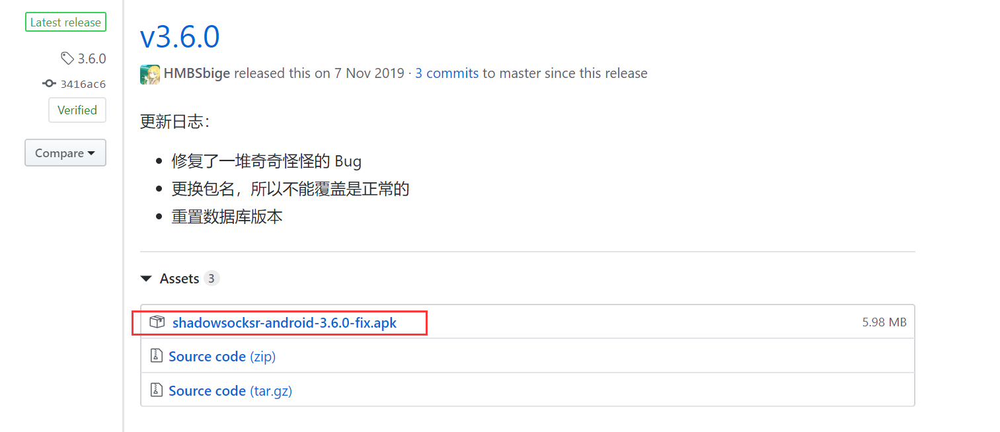
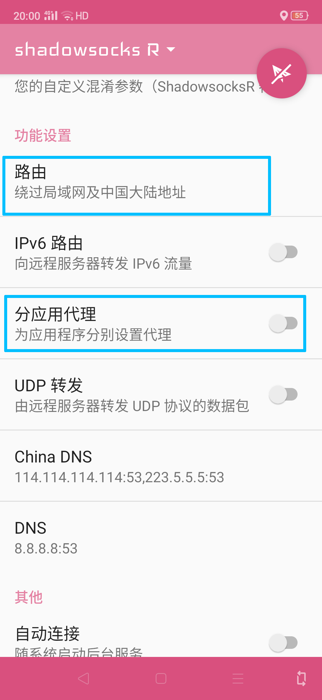

最后更新：2020年2月24日23:30
更新内容：太多了 Ver-3.1
前言
第一次听说SSR还是在高二的时候，班上一位IT巨佬向我安利了这种科学上网的技术，可直到一年前自己才算是对这门技术入了门。可能这就是为什么IT巨佬现在在UCSD研究计算机，而我在微软认为是大专的HUST里搬砖的原因吧。
前阵子哥大的招生官来学校宣讲，在回应哥大某网站被墙而无法访问时，说了这么一句话"You are students in a university named science and
technology.You should konw how to use VPN!"
但是呢，我的一位某上海知名985的CS专业的同学跟我说他不会用VPN，再加上最近有一些小伙伴问我咋科学上网。
emmmmmm...那好吧，看来科学上网目前而言并没有我想象中那么普及。
所以冒着网站被封的风险，在法律的边缘疯狂试探，整了这么一篇说不定明天就没了的文章。
既然我这个菜鸡都能搞明白SSR，相信各位在看完这篇比较白话文的文章后，也能夺回自己的信息自由获取权。
SSR简介
SSR是一种科学上网的手段，有了SSR，你可以：
- 访问本不存在的网站，如Google和Twitter
- 提高不稳定访问状态的外网网站的访问速度和稳定性，如GitHub和Microsoft
- 改变IP地址，可用于观看B站仅限港澳台的番剧，也可用于突破部分网站或游戏锁IP的限制，如P站锁日本IP（据说）
- 改善origin和steam的连接，解决各种乱七八糟的报错问题（如创意工坊无法访问，好友系统离线等等）
- 替代游戏加速器，不过一般加速效果很有限
SSR的显著优点：
- 跨平台，从Windows、macOS、Linux再到移动端的iOS和Andriod都可以使用
- 稳定，SSR的开发目的就是为了科学上网，在穿透能力上一般是比其他工具更为隐蔽和强大
- 价格较低，综合考虑科学上网的速度和成本，SSR不仅便宜，对于需求不大和动手能力强的用户甚至可以白嫖
- 自定义性强：不仅可以人为规定哪些网站需要科学上网（进一步提高速度和降低成本），还可以方便地搭建SSR自用服务器
SSR价格
下面给出两个SSR服务提供商的套餐表（分别对应下文中的机场A和机场B，截图日期：2020.1.24）。


根据我之前的安利经验，很多小伙伴估计看到了SSR要掏钱还要限流量，就感觉很不划算。但实际上，从我一年来的使用经历来看，中度的视频和下载需求下，
一年也就花了200G+的流量，而且这两个SSR提供商都允许用户每天签到获得400M左右的流量，对于某些翻墙需求不是很大的小伙伴，是可以白嫖使用的。
还有一个省钱技巧就是，部分SSR服务提供商在特定的日子会大力度打折，比如2020年的元旦，我一直用的那家（对应下文中的机场A），直接全场5折，微氪后大概就是80块1年加上2000G流量，还是非常划算的。
动手和钻研能力较强的小伙伴，可以考虑自己搭建SSR服务器，从而再次降低使用SSR的成本。
SSR使用方法
科学上网 = 客户端 + 飞机场（SSR服务提供商）因为SSR图标是一架纸飞机，所以称SSR服务提供商为飞机场。
在详细介绍SSR的使用方法前，简单说说SSR的工作原理。
SSR的原理做个类比就是代购，在国内买不到的东西，托个人出国买了再给你捎回来，SSR充当的就是代购的角色。在国内被墙的网站，在国外访问是没有问题的。你访问Google的请求，通过客户端，发送给墙外的服务器，服务器把Google的页面下载下来，再发给你，这样你就在墙内也能看到墙外的世界了。
机场
所谓机场，就是手里有一大批墙外服务器的人，每一个服务器称为一个节点，可以同时为多人服务。
这里给出两个我用着觉得还不错的机场网址
机场A 和
机场B，
很希望大家通过这两个链接去注册，因为这些机场会将你们氪金的一部分返利给邀请者（疯狂暗示）。
机场的网站是很不稳定的（重点关照对象），裸连时可能会很慢甚至会出错（通过SSR连接的话会快很多），需要大家多尝试几次。
这两个里面我更推荐机场A，并且下面都是以机场A为例讲的，机场B是我最近才找到的，而机场A我自己用了一年多了。相比之下，机场A提供的节点更多，价格会更低一点。
机场B我很欣赏他们的网页设计，并且他们给的教程对萌新更为友好，大家也可以去参观参观。
但是机场A因为最近的局势原因不敢顶风作案，所以暂时关闭了新用户注册，大家可以等一阵子再用机场A。或者直接选择机场B。
Windows客户端 下载链接
SSR功能很强大，不同平台上的客户端大同小异，这里主要以Windows的SSR客户端来讲。
Step-1:点下载链接后，在最新的那个release里下载图中的这个文件。如果你的电脑是32位的就下载Win32版本的，不知道自己电脑是多少位的话，可以去百度搜“区分32位和64位系统”，
一般不是特别老的电脑都是64位系统（直接下载红框内的那个）。

Step-2:下载后解压，打开exe文件，弹出来的提示框选否，会打开订阅设置

Step-3:登录机场，在机场首页找到SSR节点订阅地址，把地址复制下来（这是机场A页面的一部分）

Step-4:回到SSR的订阅设置，在订设置里点添加，右边栏里订阅地址粘贴刚刚复制过的地址，订阅备注可以随意填，其他的地方建议不要动（等你看完这篇教程就可以瞎动了），最后按“确定并更新”

Step-5 系统代理:在任务栏右侧找到SSR的纸飞机图标，右键弹出菜单，打开系统代理子菜单

- 直连（较为常用）：所有流量（准确来说是HTTP协议下的流量）都不会经过SSR，相当于没开SSR
-
PAC（不常用）：这种模式会根据PAC文件中的指定规则来判断流量是否通过SSR，打个比方你如果在PAC文件中指定bilibili.com也要经过SSR代理，则你访问B站的流量也会通过墙外服务器。PAC文件在SSR文件夹的根目录下，那个pac.txt就是。
需要强调的一点的是，PAC代理模式一般不用，因为接下来介绍的全局模式完全包含了PAC模式所有的功能。
- 全局（日常使用）：所有流量都会经过SSR，但是SSR会根据流量指向自动判断这个流量是否要墙外服务器来插手，具体的判断规则会在下一节的“规则设置”中详细介绍
- 不修改（更不常用）：对于像我一样的萌新而言，跟直连模式没啥区别。
Step-6规则设置：规则设置主要是针对PAC模式和全局模式下的流量代理规则，第一个子菜单“更新PAC”就是PAC模式下的规则，第二个子菜单“代理规则”适用于上一步的全局模式，由于这两个子菜单里的选项都差不多，拿更为常用的“代理规则”里的选项来讲讲

- 绕过局域网（不常用）：绕过的意思就是不走代理（SSR），绕过局域网就是局域网内的流量将不通过SSR而是直接连接，常见的局域网环境例如学校机房，其他形式的流量会走SSR代理
- 绕过局域网和大陆（常用）：绕过局域网的意思同上，绕过大陆指的是你访问一些国内（大陆地区）网站时，这部分流量也是不经过SSR的，这部分之外的流量走SSR。例如，访问百度不会走SSR，但是访问Google时会。请注意！
在这个设置下，你想在B站看港澳台的番剧时会发现还是行不通，道理很简单，B站是国内网站，没有走SSR代理，解决办法是在这个菜单下设置为全局（下面会讲）。（百度查IP地址也是一个道理）
- 绕过局域网和非大陆（海外党常用）：同理可得，非大陆的流量将不走SSR，大陆的流量走SSR，用于大陆外的小伙伴翻回墙内白嫖某些资源。
- 用户自定义（不常用）：作用类似于PAC，进阶功能，反正我是太菜了，不会用。
- 全局（常用）：所有的流量经过SSR，用处就是访问国内网站时改变IP地址，比如访问百度和B站时也会让墙外服务器帮你一把，从而让你能看到B站的港澳台限定的番。
Step-7
切换节点：日常使用时，上面两个一般设置为“全局系统代理”和“绕过局域网和大陆”。设置完成后，可能还是上不了Google，原因是SSR默认连接机场返回的节点列表中的第一个节点，而这个节点可能是不可用的，这时需要切换到可用节点。
打开连接统计，有两种方法，第一种是中键SSR任务栏图标，第二种是右键任务栏图标，在菜单中找服务器——连接统计。

连接统计里会有很详细的节点信息。平均下载速度其实就是当前通过SSR的流量速度，总下载是这个节点所有时间的下载量，实下载是本次使用SSR这个节点的下载量。要切换节点的话，在服务器那一栏左键点你想挂的节点就行了。
在这着重强调下节点名字的含义，也就是服务器那一栏。虽然每个机场可能给节点的命名规则不一样，但大同小异，具体的可以参考机场的公告。
- 名字前面的地区一般决定了你的IP地址段，这个针对部分锁IP的网站和游戏，比如P站会限制特定IP区间的流量才能访问，一般挂日本地区的节点就没什么大问题，但是你挂香港节点有可能就连不上。
- 名字后面的数字加乘号，表示机场的流量统计方式。拿图中我挂着的这个节点为例，后面写着20x，那么你实下载1M的流量，在机场那统计的流量使用量是1M x 20
=20M，因为深港专线服务器租赁费用比较高，能提供更快的连接速度和防止被墙。平时使用时要格外注意，防止发生我朋友一天烧了80G流量的类似悲剧。
如果大家对节点感兴趣的话，这里给出一张图（图来自机场B）和一个链接，讲的是比我强多了。

Step-8 OVER!：Windows上的SSR客户端的萌新科普就完结了，欢迎来到（回到）新世界！
iOS客户端 Shadowrocket
iOS上的SSR客户端Shadowrocket反正我是觉得比Windows上的好使，而且Shadowrocket不仅支持SSR，还支持其他很多协议，虽然我除了SSR也不知道其他的咋用。
Step-1 下载APP
iOS上用SSR的难点在于下载客户端Shadowrocket，这个APP在国区的App Store里是搜不到的（显而易见的原因），只能到非国区的App
Store去下载，香港、日本、美国的App
Store都行。
但是前提是得有个非中国的苹果账号，这玩意还不是很好搞。不过如何注册日本或者美国地区的苹果账号的教程，百度上一抓一大把，啥时候有空了，说不定自己也会写（有生之年+2）。
反正我只记得我注册日区账号时，电话和住址填的是右下图中秋叶原的柚子社商店（滑稽）。
千辛万苦注册好苹果账号后，你还得氪金买这个APP，貌似是3美金，所以你还得往你的苹果账号里充钱，首先你得有张master或者visa的信用卡。
这些本来都是些很麻烦的操作，直到万能的淘宝出现了。不论是苹果账号还是充钱，有钱能使鬼推磨，你都能在淘宝上享受一条龙服务。买号大概5RMB,买礼品卡充钱最少好像是5美金起卖，总成本就是40左右。（我美区账号淘宝买的，日区账号自己注册的，也不是那么麻烦）
实在两个都不想买的，可以找我py一下，诚恳地拿你们的女装照片来求我个几次，说不定我会勉为其难地答应。
Step-2 Shadowrocket登机指南
- 添加订阅：进入APP后点击右上角的+号，在类型里选subscribe，URL就是机场给的订阅链接，备注也是可以随意填，填完后右上角完成即可。
- 设置代理模式：点首页的全局路由，请先看完Windows部分的Step-5和Step-6
- 配置：类似于Windows客户端的绕过局域网和大陆，需要翻墙的网站就走SSR代理，不需要的就直接连接
- 代理：同Windows客户端的全局，所有流量全部经过SSR
- 直连：和Windows客户端的直连一样
安卓客户端
Step-1 下载客户端
和Windows一样，给出GitHub上的下载链接:点击此处
安卓的APP安装包是以apk为后缀名的，所以挑最新的版本下载就OK

但是貌似没翻墙的情况下直接从GitHub下载时，速度实在是感人，这里也可以直接从我的服务器上下载3.6.0版本的：点此下载
Step-2 设置客户端
安装完成后，打开客户端
- 左上角点shadowsocksR
- 添加订阅的步骤和其他平台客户端是一样的，从机场copy下来的链接填进去
- 添加订阅后，选择一个节点，会返回到首页，点飞机图标即可开启SSR
Step-3 其他设置
在APP首页往下翻，可以设置代理方式和分应用代理。

- 路由：这个设置菜单里，和Windows客户端的设置是一样的，参看Windows部分的Step-5和Step-6
- 分应用代理：这个应该是安卓客户端特色功能了，可以指定哪些APP经过SSR代理，非常实用的一个功能。
福利
分享一个自己搭建的节点，梯子架在亚马逊的美国服务器上，速度肯定比不上机场，大家可以白嫖凑合着用。
ssr://My44NC4yMjEuMTE0OjcyNzI6YXV0aF9zaGExX3Y0OmFlcy0yNTYtY2ZiOnBsYWluOmMyOXlZWEJoWjJVLz9vYmZzcGFyYW09JnJlbWFya3M9UVZkVExlZS1qdVdidlEmZ3JvdXA9VTI5eVlWQmhaMlU
PS:复制，在SSR客户端中选择从剪切板导入节点。
目前在考虑搭建第二个节点，应该是架在日本，等另一位CUHK的大佬有空后再说。
希望各位理性使用，如果超出了使用额度，服务器会被收回。


评论区